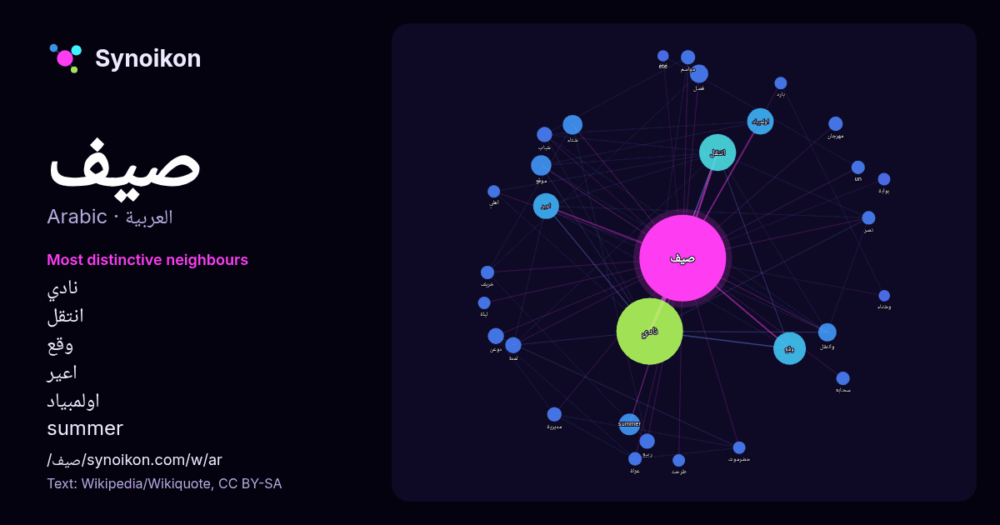

العربية · قائمة كلمات اليوم
صيف
“summer” · الكلمات الموجودة حولها في 454 ورودًا من ويكيبيديا, Wikiquote.

الجيران الأكثر تميّزًا
- نادي 59×
- انتقل 39×
- وقع 35×
- اعير 27×
- اولمبياد 27×
- summer 19×
- شتاء 14×
- وانتقل 13×
- دوعن 11×
- فصل 10×
- ربيع 8.5×
- موقع 8.4×
- un 8.0×
- مديرية 7.9×
- مواسم 7.9×
- سحابة 7.8×
- خريف 7.4×
- مهرجان 7.0×
- طرحت 6.9×
- شباب 6.8×
× = كم مرة أكثر مما في نصوص ويكيبيديا العامة.
الجيران الأكثر تكرارًا
- نادي 172
- انتقل 53
- وقع 41
- اولمبياد 27
- اعير 26
- summer 18
- موقع 16
- شتاء 15
- فصل 13
- وانتقل 13
- دوعن 10
- لمدة 10
- ربيع 9
- شباب 9
- فيلم 9
- رجال 8
- محمد 8
- مديرية 8
- مهرجان 8
- مواسم 8
في السياق
- الصَّيْف (الجمع: صُيُوفٌ أو أَصْيَافٌ) هو أحد فصول السنة الأربعة في المناطق المعتدلة والقطبية من الكوكب. يتبع الصيف فصل الربيع ويليه فصل الخريف. يوجد Wikipedia snippets · صيف
- صيف - مديرية - تعديل - تعديل مصدري - تعديل ويكي بيانات بلدة صيف، واحدة من أهم البلدات في وادي #دوعن بـ #حضرموت وأعرقها تاريخياً. توصف بأنها مفتاح وادي Wikipedia snippets · صيف (حضرموت)
- صيف قاس Cruel Summer (الإنجليزية) تعديل - تعديل مصدري - تعديل ويكي بيانات صيف قاس هو فيلم قصير من قبل الموسيقار الأمريكي كانييه ويست. من إنتاج شركة جيدة Wikipedia snippets · صيف قاس (فلم)
- صيف هندي هو نوبة من الطقس المشمس تحدث في شهر تشرين الأول وأوائل شهر تشرين الثاني في الولايات المتحدة وبريطانيا ، كما يستخدم هذا المصطلح للدلالة على النوبة Wikipedia snippets · صيف هندي
- صيف 42 Summer of '42 (الإنجليزية) تعديل - تعديل مصدري - تعديل ويكي بيانات صيف 42 (الإنجليزية: Summer of '42) هو فيلم موسيقي تم إنتاجه في الولايات المت … Wikipedia snippets · صيف 42 (فلم)
- سحابة صيف ملصق الفلم تعديل - تعديل مصدري - تعديل ويكي بيانات سحابة صيف هو فلمٌ عراقي ٌ عُرض 1990، وأخرجه صبيح عبد الكريم، وهو آخر فلمٍ يخرجه. يكتشف المزارع Wikipedia snippets · سحابة صيف (فلم)
- صيف عند الجد (بالصينية: 冬冬的假期) دراما عائلية تايوانية لعام 1984 من إخراج هسياو هسين هوى وشارك في كتابتها هو تشو تيان وين. يروي الفيلم شبه سيرة ذاتية لأخ Wikipedia snippets · صيف عند الجد (فلم)
- صيف 84 Summer of '84 (الإنجليزية) تعديل - تعديل مصدري - تعديل ويكي بيانات صيف 84 (الإنجليزية: Summer of 84) هو فيلم رعب وغموض تم إنتاجه في كندا وصدر سنة Wikipedia snippets · صيف 84 (فلم)
كلمات أخرى
- أغنية
- إله
- تاريخ
- جبل
- جرس
- جزيرة
- جسر
- حديقة
- حصان
- حقيقة
- حياة
- خبز
- خريطة
- خريف
- ذهب
- زمن
- ساعة
- شاي
- شتاء
- صحة
- صحراء
- صمت
- طبيعة
- طريق
- طعام
- ظل
- عائلة
- عاصفة
- عسل
- علم
- عمل
- غابة
- فن
- قطار
- قطة
- قلب
- قوة
- كلب
- لغة
- ماء
- مال
- مدينة
- مرآة
- مطر
- ملح
- مناخ
- موت
- نجم
- والدة
حُسبت مسبقًا في 2026-10-09 بالإعدادات الافتراضية (±5 كلمات، مدوّنة متوسطة). يمكن للخريطة التفاعلية تحديثها ببيانات حية.
واجهة مترجمة آليًا؛ نرحب بالتصحيحات.